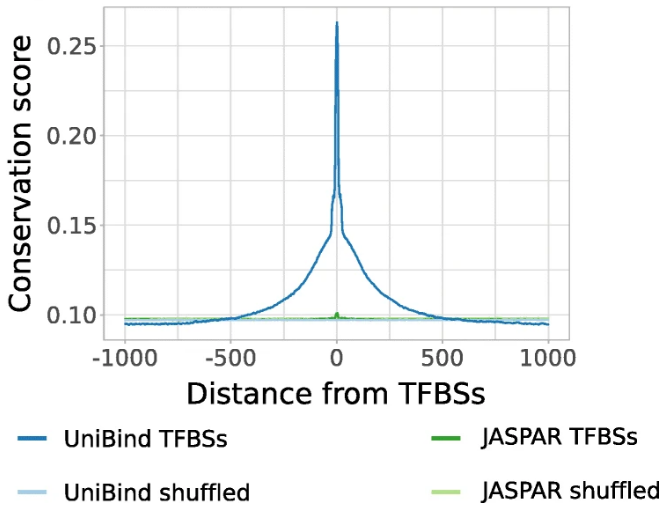

# = co-corresponding authors
I have peer-reviewed articles for these journals: Bioinformatics, Genetics, Molecular Plant, Nucleic Acids Research,
Genome biology, Genome Biology and Evolution, Frontiers in Genetics, eLife.
| 23. |
RhizoBindingSites v2.0 Is a Bioinformatic Database of DNA Motifs Potentially Involved in Transcriptional Regulation Deduced From Their Genomic Sites
Taboada-Castro H, AJ Hernández-Álvarez, Castro-Mondragon JA, and Encarnación-Guevara S (2024) Bioinformatics and Biology Insights. |
|
| 22. |
Identification of transcription factor co-binding patterns with non-negative matrix factorization.
Rauluseviciute I, Launay T, Barzaghi G, Nikumbh S, Lenhard B, Krebs AR, Castro-Mondragon JA, and Mathelier A (2024) Nucleic Acids Research. |
 |
| 21. |
JASPAR 2024: 20th anniversary of the open-access database of transcription factor binding profiles.
Rauluseviciute I*, Riudavets-Puig R*, Blanc-Mathieu R^, Castro-Mondragon JA^, Ferenc K^, Kumar V^, Berhanu Lemma R^, Lucas J^, Cheneby J, Baranasic D, Khan A, Fornes O, Gundersen S, Johansen M, Hovig E, Lenhard B#, Sandelin A#, Wasserman WW#, Parcy F#, and Mathelier A#. (2024) Nucleic Acids Research. |
 |
| 20. |
Cis-regulatory mutations associate with transcriptional and post-transcriptional deregulation of gene regulatory programs in cancers
Castro-Mondragon JA, Ragle Aure M, Lingjærde OC, Langerød A, Martens JWM, Børresen-Dale AL, Kristensen VN, and Mathelier A (2022) Nucleic Acids Research. |
|
| 19. |
Genetic architecture of natural variations of cardiac performance in flies
Saha S*, Spinelli L*, Castro-Mondragon JA, Kervadec A, Lynott M, Kremmer L, Roder L, Sallouha J, Torres M, Brun C, Vogler G, Bodmer R, Colas AR#, Ocorr K#, and Perrin L# (2021) eLife. |
|
| 18. |
RSAT 2022: regulatory sequence analysis tools
Santana-Garcia W*, Castro-Mondragon JA*, Padilla-Galvez M, Nguyen NTT, Elizondo-Salas A, Ksouri N, Gerbes F, Thieffry D, Vincens P, Contreras-Moreira B#, van Helden J#, Thomas-Chollier M#, Medina-Rivera A#. (2022) Nucleic Acids Research |
|
| 17. |
JASPAR 2022: the 9th release of the open-access database of transcription factor binding profiles
Castro-Mondragon JA*, Riudavets-Puig R*, Rauluseviciute I*, Berhanu Lemma R, Turchi L, Blanc-Mathieu R, Lucas J, Boddie P, Khan A, Manosalva Perez N, Fornes O, Leung TY, Aguirre A, Hammal F, Schmelter D, Baranasic D, Ballester B, Sandelin A#, Lenhard B#, Vandepoele K, Wasserman WW#, Parcy F#, and Mathelier A#. (2021) Nucleic Acids Research |
|
| 16. |
Epromoters function as a hub to recruit key transcription factors required for the inflammatory response
Santiago-Algarra D, Souaid C, Singh H, Dao TML, Hussain S, Medina-Rivera A, Ramirez-Navarro L, Castro-Mondragon JA, Sadouni N, Charbonnier G, Spicuglia S. (2021) Nature Communications |
|
| 15. |
UniBind: maps of high-confidence direct TF-DNA interactions across nine species
Riudavets Puig R, Boddie P, Khan A, Castro-Mondragon JA, and Mathelier A (2021) BMC Genomics. |
 |
| 14. |
Crosstalk between microRNA expression and DNA methylation drives the hormone-dependent phenotype of breast cancer
Ragle Aure M, Fleischer T, Bjørklund S, Ankill J, Castro-Mondragon JA, OSBREAC (Oslo Breast Cancer Research Consortium), Børresen-Dale AL, Tost J, Sahlberg KK, Mathelier A, Tekpli X#, Kristensen VN# (2021) Genome Medicine. |
|
| 13. |
Tuning promoter boundaries improves regulatory motif discovery in non-model plants: the peach example
Ksouri N, Castro-Mondragon JA, Montardit-Tarda F, van Helden J, Contreras-Moreira B#, and Gogorcena Y# (2021) Plant Physiology. |
|
| 12. |
RhizoBindingSites, a Database of DNA-Binding Motifs in Nitrogen-Fixing Bacteria Inferred Using a Footprint Discovery Approach
Taboada-Castro H, Castro-Mondragon JA, Aguilar-Vera A, Hernandez-Alvarez AJ, van Helden J, and Encarnacion-Guervara S. (2020) Frontiers in Microbiology |
|
| 11. |
JASPAR 2020: update of the open-access database of transcription factor binding profiles
Fornes O*, Castro-Mondragon JA*, Khan A*, van der Lee Robin, Zhang X, Richmond PA, Modi BP, Correard S, Gheorghe M, Baranasic D, Santana-Garcia Walter, Tan G, Cheneby J, Ballester B, Parcy F, Sandelin A#, Lenhard B#, Wasserman WW#, and Mathelier A#. (2019) Nucleic Acids Research |
|
| 10. |
RSAT 2018: regulatory sequence analysis tools 20th anniversary
Nguyen NTT*, Contreras-Moreira B*, Castro-Mondragon JA, Santana-Garcia W, Ossio R, Robles-Espinoza CD, Bahin M, Collombet S, Vincens P, Thieffry D, van Helden J#, Medina-Rivera A#, Thomas-Chollier M#. (2018) Nucleic Acids Research |
|
| 9. |
Proteins in the periplasmic space and outer membrane vesicles of Rhizobium etli CE3 grown in minimal medium are largely distinct and change with growth phase
Taboada H*, Meneses N*, Dunn MF*, Vargas-Lagunas C, Buchs N, Castro-Mondragon JA, Heller M, and Encarnacion S. (2018) Microbiology. |
|
| 8. |
JASPAR 2018: update of the open-access database of transcription factor binding profiles and its web framework
Khan A*, Fornes O*, Stigliani A*, Gheorghe M, Castro-Mondragon JA, van der Lee R, Bessy A, Chèneby J, Kulkarni S, Tan G, Baranasic D, Arenillas D, Sandelin A#, Vandepoele K, Lenhard B#, Ballester B, Wasserman W#, Parcy F, Mathelier A#. (2017) Nucleic Acids Research |
 |
| 7. |
Genome-wide characterization of mammalian promoters with distal enhancer functions
Dao LM*, Galindo-Albarran AO*, Castro-Mondragon JA^, Andireu-Soler C^, Medina-Rivera A^, Souadi C, Charbonnier G, Griffon A, Vanhille L, Stephen S, Alomairi J, Soler C, Stephen T, Martin D, Torres M, Fernandez N, Soler E, van Helden J, Puthier D, Spicuglia S (2017) Nature Genetics |
|
| 6. |
RSAT matrix-clustering: dynamic exploration and redundancy reduction of transcription factor binding motif collections
Castro-Mondragon JA, Jaeger S, Thieffry D, Thomas-Chollier M#, and van Helden J# (2017) Nucleic Acids Research |
|
| 5. |
RSAT::Plants: Motif Discovery in ChIP-Seq Peaks of Plant Genomes
Castro-Mondragon JA*, Rioualen C*, Contreras-Moreira B, van Helden J (2016) Plant Synthetic Promoters - Springer Protocol |
 |
| 4. |
RSAT::Plants: Motif Discovery Within Clusters of Upstream Sequences in Plant Genomes
Contreras-Moreira B#, Castro-Mondragon JA, Rioualen C, Cantalapiedra CP, van Helden J (2016) Plant Synthetic Promoters - Springer Protocol |
|
| 3. |
RegulonDB version 9.0: high-level integration of gene regulation, coexpression, motif clustering and beyond
Gama-Castro S*, Salgado H*, Santos-Zavaleta A, Ledezma-Tejeida D, Muñiz-Rascado L, García-Sotelo JS, Alquicira-Hernández K, Martínez-Flores I, Pannier L, Castro-Mondragón JA, Medina-Rivera A, Solano-Lira H, Bonavides-Martínez C, Pérez-Rueda E, Alquicira-Hernández S, Porrón-Sotelo L, López-Fuentes A, Hernández-Koutoucheva A, Del Moral-Chávez V, Rinaldi F, Collado-Vides J. (2015) Nucleic Acids Research |
|
| 2. |
RSAT 2015 : Regulatory Sequence Analysis Tools
Medina-Rivera A*, Defrance M*, Sand O*, Herrmann C, Castro-Mondragon JA, Delerce J, Jaeger S, Blanchet C, Vincens P, Caron C, Staines DM, Contreras-Moreira B, Artufel M, Charbonnier–Khamvongsa L, Hernandez C, Thieffry D, Thomas-Chollier M#, van Helden J# (2015) Nucleic Acids Research |
|
| 1. |
Genomic basis of symbiovar mimosae in Rhizobium etli
Rogel MA, Bustos P, Santamaría RI, González V, Romero D, Miguel AC, Lozano L, Castro-Mondragon JA, Martínez-Romero J, Ormeño-Orrillo E, Martínez-Romero E. (2014) BMC Genomics |
|